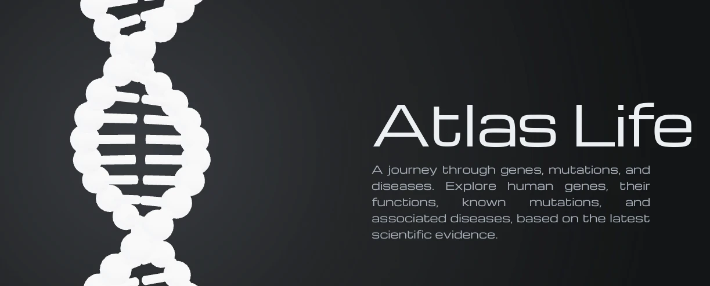

side A · track 03
AtlasLife
a guided tour of DNA
An interactive genomics website. Scroll to turn a 3D double helix and stop at short lessons on how DNA is built, copied, read and changed.
DNA

what it is
AtlasLife explains molecular biology for curious non-specialists. A Three.js scene renders a DNA model that rotates as you scroll, and each stop along the helix opens its own page.
Beyond the tour there's a small hands-on tool and a plain-language glossary, so visitors can play with sequences instead of only reading about them.
the tour
- How DNA is builtTwo backbones, four bases, and the pairing rules that hold them together.
- How it copies itselfUnzip, prime, extend, stitch — one double helix becomes two.
- How genes become proteinsTranscription and translation: from a sequence of letters to a working molecule.
- How it changesMutations, repair, and why a single letter can matter — or not at all.
- Complement a strandType a short sequence and see its partner strand and the protein it would build.